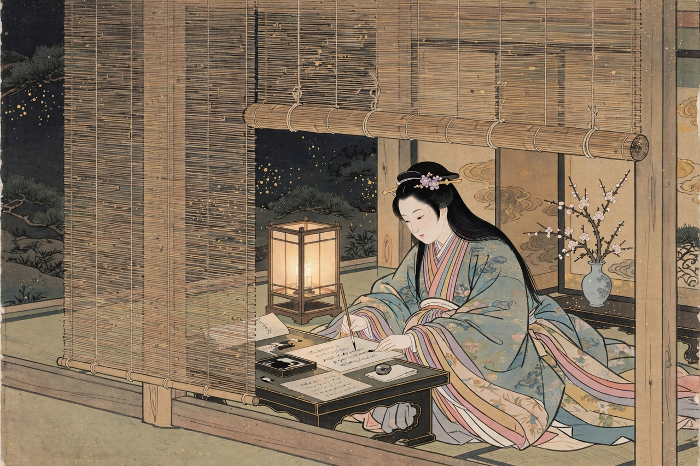

Wikipedia — The Free Encyclopedia

Sei Shōnagon (c. 966 – 1017 or later) was a Japanese author and court lady of the middle Heian period. She is best known as the author of The Pillow Book (Makura no Sōshi), a collection of lists, anecdotes, poems and observations about court life, completed around the year 1002.
Shōnagon was a daughter of Kiyohara no Motosuke, a provincial governor and noted poet. From about 993 to 1000 she served as a lady-in-waiting to Empress Teishi (Sadako), consort of Emperor Ichijō, at the imperial court in Kyoto. Her real name is not known with certainty — "Sei Shōnagon" combines her family name (Sei for Kiyohara) with her court office of shōnagon (lesser counsellor). Little is reliably recorded of her life after the Empress's death in 1000.
The work that made her famous belongs to the genre called zuihitsu ("following the brush"): miscellaneous jottings seemingly written for her private amusement. Its most famous passages are her lists — "Elegant things", "Hateful things", "Things that make one's heart beat faster" — which display a brilliant, exacting aesthetic sensibility. The book gives an unmatched picture of Heian court culture: its ceremonies, clothes, wit-combats and love affairs. Shōnagon was a contemporary and rival of Murasaki Shikibu, author of The Tale of Genji, who wrote about her critically in her diary.